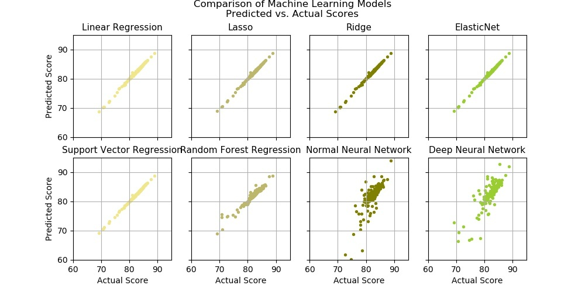
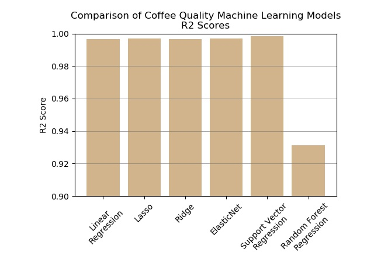
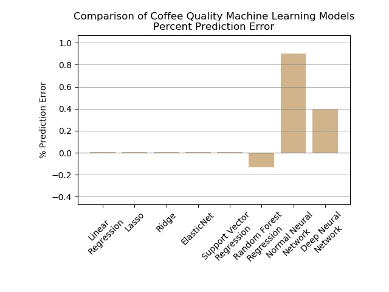
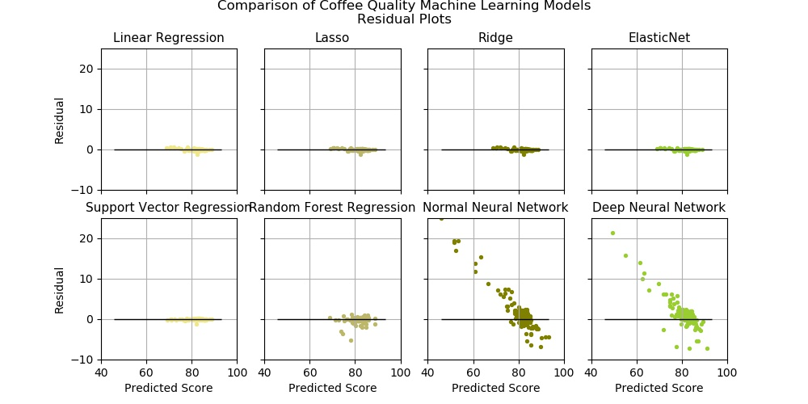

Here we have plotted the actual vs. predicted coffee quality scores for each model, all on the same scale for comparison. It appears that the linear and support vector regression models produced the most accurate predictions
When we calculate the percent error for the predictions, we get an even clearer picture of the accuracy—the linear regression, lasso, ridge and elasticnet models all have a percent error so close to zero that it barely registers on the chart. Support vector regression also has quite a low percent error. The random forest and neural network models clearly did not perform as well, with much higher (though still barely over 1%) percent error. If we remove the neural networks from the chart, we can see the differences between the remaining models in slightly greater detail. The linear and support vector regression models, however, still appear to have performed with similar accuracy.
We can also see that the R2 scores for the well-performing models are higher than the lower performing models. The linear models, along with support vector regression have the highest R2 scores, which tracks with their low prediction percent error.
At face value it appears the models with R2 scores close to 1 are the most accurate at predicting coffee quality scores, but we must also examine the residual plots to be sure. Residuals represent the difference between predicted and actual values. The closer they are to 0, the more accurate the model’s predictions are. Here we confirm that the linear and SVR models provided the most accurate predictions for coffee quality. Again, if we remove the neural networks from the comparison and rescale the charts to display the residuals with even more granularity, it is revealed that the support vector regression model has the smallest variance between actual and predicted scores. This combined with the model’s high R2 score suggests that the support vector regression model predicted coffee quality scores with the greatest accuracy.
